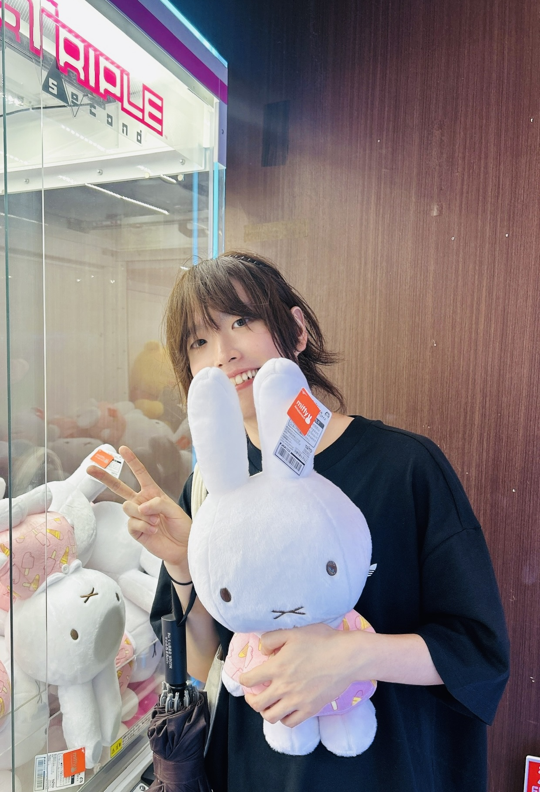

Chang Yoon (Yoon) Chung
MSc Student in Applied Mathematics @ Université de Montréal
- Applied and Industrial Mathematics / Data Analysis
- Computational Methods in Systems Biology
- Transcriptional Regulatory Systems
Université de Montréal (2025 – 2027)
- MSc in Applied Mathematics
- Supervised by Prof. David McLeod
- Thesis-based Master's Program
- Funded by Graduate Research Assistantship and International Tuition Exemption Scholarship
University of Alberta (2021 – 2024)
- BSc in Mathematics and Computing Science
- Graduation with Distinction
PUBLICATIONS & PREPRINTS
How Cells Tame Noise While Maintaining Ultrasensitive Transcriptional Responses, 2025
- Authors: Eui Min Jeong*, Chang Yoon Chung*, Jae Kyoung Kim^ (*First Author, ^Corresponding Author)
- Preprint available on bioRxiv, currently under review at PLOS Computational Biology
- https://www.biorxiv.org/content/10.1101/2025.06.12.659288v1
Experience
PROFESSIONAL EXPERIENCES
MSc Candidate; Graduate student Researcher – August 2025 ~ Present
- Supervised by Professor David McLeod
- Participating in weekly lab meetings at Professor Morgan Craig’s research group
- Taking coursework required for computational/mathematical biology research
- Currently working on the revision of “How Cells Tame Noise While Maintaining Ultrasensitive Transcriptional Responses”, for PLOS Computational Biology
Undergraduate Researcher – July 2024 ~ August 2025
- Worked on research projects under Professor Jae Kyoung Kim (KAIST), and Professor Eui min Jeong (Inha University)
- First author publication of “How Cells Tame Noise While Maintaining Ultrasensitive Transcriptional Responses” on bioRxiv (PLOS Computational Biology, under revision)
- Investigated Fano factor discrepancies between multiple transcription regulatory systems
- Identified components contributing to high noise triggering unexpected activation/repression in transcription regulatory systems
- Studied how multiple transcription mechanisms generate strong rhythm and noise robustness in biological oscillators (e.g., circadian rhythm, p53-MDM2)
FX Technical Director Intern – July 2022 ~ August 2022
- Worked on Netflix film “In Your Dreams” (2025)
- Applied vector calculus and linear algebra to 3D particle and fluid simulations
- Used Python and proprietary languages for procedural control of fluid dynamics
Research Assistant – September 2020 ~ December 2020
- Assisted global market research projects during COVID19
- Worked on projects analyzing overproduction and waste of facial masks
- Collection of data, report write-ups, and creation of presentation materials
- Used Python for big data processing, and organization
TEACHING EXPERIENCES
Calculus and Linear Algebra Tutor – June 2023 ~ September 2023
- Tutored first-year undergraduate students
English Tutor – February 2021 ~ November 2021
- Tutored contemporary English to Korean students
RESEARCH & PROJECTS
How Cells Tame Noise While Maintaining Ultrasensitive Transcriptional Responses, 2024 ~ 2025
- Conducted at Biomedical Mathematics Group (BIMAG) in the Institute of Basic Science (IBS)
- Presented at IBS Biomedical Mathematics Group Winter 2024 Workshop
Validity of Stochastic Quasi-Steady State Approximation, 2025
- Currently in Progress (Université de Montréal Project)
- Analysis of Quasi-Steady State Approximation techniques in complex stochastic biological models
A Supervised Classification Approach to Parameter Estimation in Spatial-Temporal Partial Differential Equations Modelling of Tumor Growth, 2025
- Currently in Progress (Université de Montréal Project)
- Dimensionality reduction, classification and parameter estimation of sequenced spatial-temporal data
Cell Division and its Stochastic Model, 2024
- University of Alberta Coursework Project
- Development and analysis of cell division stochastic model
Netflix 3D Animation Film, “In Your Dreams”, 2022
- FX Technical Director intern, particle/fluid dynamics simulation using mathematical and computational skills
PRESENTATIONS
“How Cells Tame Noise While Maintaining Ultrasensitive Transcriptional Responses”
- Winter 2024 Biomedical Mathematics Group Workshop (BIMAG), Institute for Basic Science
“A Supervised Classification Approach to Parameter Estimation in Spatial-Temporal PDE Modelling of Tumor Growth”
- Université de Montréal (In progress, Fall 2025)
HONORS & AWARDS
Université de Montréal International Tuition Exemption Scholarship
- Université de Montréal
Graduate Research Assistantship (GRA)
- Université de Montréal
President’s Admission Scholarship
- University of Alberta
Dean’s Honor Roll (2023, 2024)
- University of Alberta
Graduation with Distinction
- University of Alberta